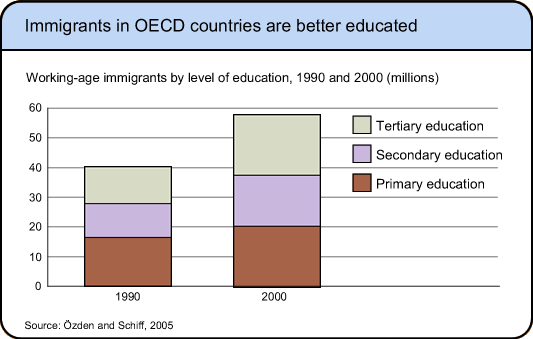
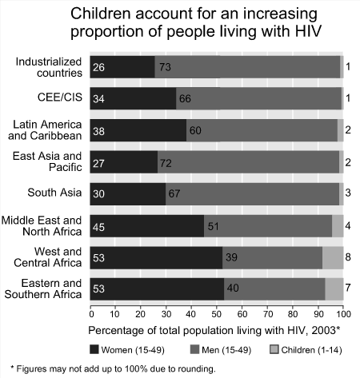

Stacking the bars
Although clustered bar charts are useful displays for comparing groups, they become very cluttered if there are many groups. When the values in each group form a partition of a meaningful total, an alternative display is a stacked bar chart. This simply stacks the bars from each group on top of each other in a column (or a row if the bars are oriented horizontally).
Stacked bar charts are usually a clearer way to compare many groups.
Stacked bar charts are particularly useful if the categories are ordered in some meaningful way.
Only draw a stacked bar chart if the values in each group are a partition of a meaningful total for the group.
Stacked bar charts for proportions
If a stacked bar chart is drawn from the raw values in a table, the overall lengths of the stacks represent the group totals. If these group totals vary considerably, or if differences in the group totals are of little importance, the stacked bar chart can be drawn using the percentages within each group. This scales each stack to the same length (100%), making it easier to compare the distribution of categories within the groups.
Educational qualifications
The final-year qualification that is attempted by most secondary students in New Zealand (NCEA level 3) is split into a set of units called achievement standards, some of which are internally assessed, others being assessed in a national examination. For each unit, the result is either Not achieved, Achieved, Merit or Excellence. The achievement standards are classified into the following major subject areas:
The results for 2006 are displayed for the externally assessed units in the bar chart and table below.
There were different numbers attempting achievement standards in the different subjects, so select Propn within Subject or Percent within Subject from the pop-up menu at the top.
Now click the checkbox Stacked to change the bar chart into a stacked bar chart. Since the responses are ordered (e.g. Merit is between Achieved and Excellence), the stacked bar charts are particularly effective for comparing the subjects. Observe in particular that.
Two published stacked bar charts
The following stacked bar chart is based on raw counts of individuals. The total heights of the bars show the total number of immigrants in the two years, so the diagram highlights the increase in the total number from 1990 to 2000. However it is difficult to assess how the proportion of immigrants with tertiary education changed. A second stacked bar chart displaying the percentages in each year would have shown that better.

The next stacked bar chart shows information about those with HIV in several regions of the world. It is intended to show whether there are differences between the ages or genders of those with the disease in the regions. The total numbers with HIV are of much less interest here, so the diagram displays percentages and all stacks therefore have length 100%.
